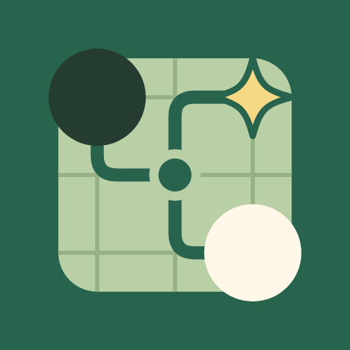
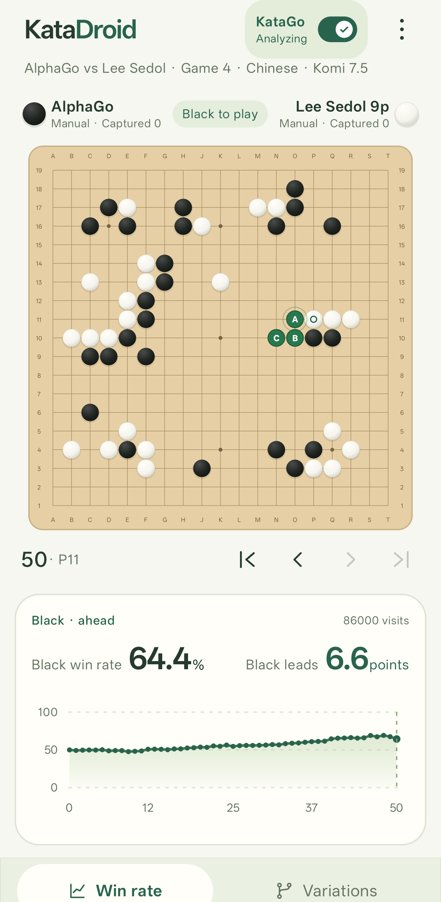
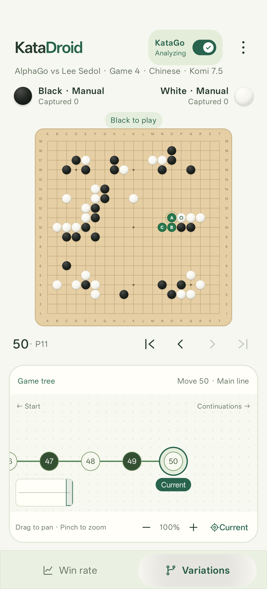
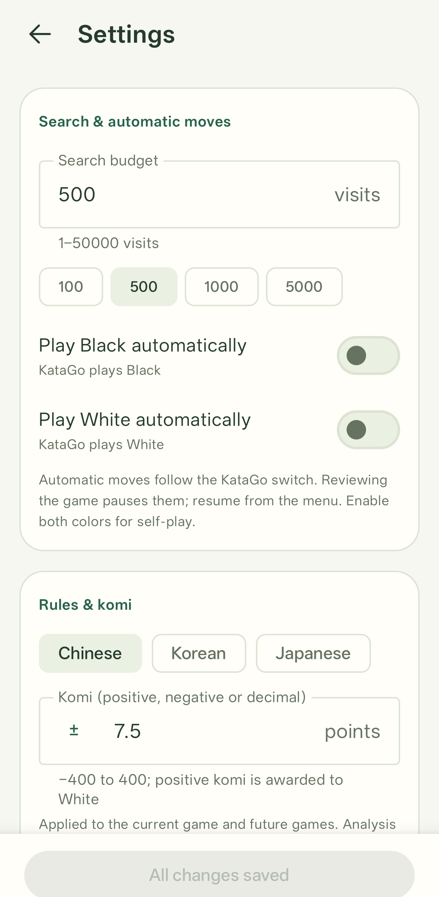
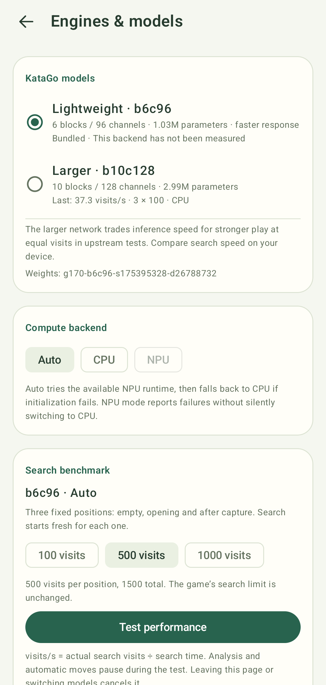

See the possibilities.
Explore candidate moves and win-rate changes. Hold a candidate to preview the line, and tap the chart to revisit a position.

KataDroidA quiet place to think about Go. Play, explore variations, and find new possibilities with KataGo analysis — right on your Android device.

From the first stone to the what-if.
A board that keeps up with your thinking.
Explore candidate moves and win-rate changes. Hold a candidate to preview the line, and tap the chart to revisit a position.
Build branches without losing your main line. Navigate the variation tree and keep your comments and saved analysis close.
Play both sides, give KataGo a color, or watch self-play. Import and export 19×19 SGF games, including variations and comments.



The official KataGo search engine, with two bundled networks and CPU inference. Optional NPU acceleration depends on your device and packaged runtime. Pause the engine and keep exploring saved analysis.
Explore performance & technology →Official search and rules, adapted to Android. A local inference pipeline designed to keep analysis responsive, preserve numerical behavior, and make performance measurable.
KataGo v1.18.2 supplies board rules, input features, postprocessing and search. The upstream source stays unchanged; our Android C++ adapter connects it through JNI to LiteRT 2.2.0 for neural inference.
Search stays in KataGo. Neural inference takes one of the three runtime paths below.
Auto tries a packaged NPU runtime and falls back to CPU on initialization failure. Explicit NPU reports errors. The NPU paths require compatible vendor runtimes and drivers.
On a small screen, swipe across the diagram to follow each path.
The model route: official g170 weights → ONNX → NHWC TFLite. Both bundled networks use fixed 19×19, batch-one exports, retain all five output heads, and are checked against official reference outputs. No retraining or INT8 calibration was needed.
Reusable LiteRT inputs and outputs avoid repeatedly rebuilding tensor storage. One search worker, one neural worker and batch size one fit the app’s interactive workload.
b6c96 (~1.03M parameters) favors lower inference cost; b10c128 (~2.99M) offers a larger network. Auto tries a packaged NPU runtime, then falls back to CPU if initialization fails.
Cancellation prevents old searches from publishing into a new position. Analysis and benchmarks share one worker; caches are separated by model hash and actual backend. Progressive updates start at 32 and 128 visits.
NPU integration is vendor-specific: Qualcomm uses FastRPC tensor boundaries; experimental MediaTek uses AHWB/DMA-BUF and a runtime-selection patch. Native delegation audits establish whether graph execution actually runs on the NPU.
Recorded search visits per second from debug builds. The AVD and MT6989 baselines were measured on 2 October 2026; Snapdragon comes from a prior exploratory run. Results include inference and search overhead.
| Environment / actual backend | b6c96 | b10c128 | Visits / position |
|---|---|---|---|
| Android Studio AVD / CPU | 121.8 | 44.8 | 100 |
| MediaTek MT6989 / NPU | 276.1 | 225.9 | 500 |
| Snapdragon 8 Elite / NPU | 665.0 | Unverified | 500 |
Each run warms up for 32 visits, then measures three fresh positions: empty board, an eight-move opening, and a position after capture. Trees and neural caches are cleared between positions. Throughput = total actual visits ÷ total search time; initialization and warm-up are excluded.
AVD CPU figures depend on the host computer and are not phone CPU measurements. The MT6989 run completed the both-model native delegation audit. Snapdragon’s b6 result is exploratory; its combined both-model audit did not complete and b10 performance is unverified. Different environments and visit budgets do not establish a CPU-to-NPU speedup. These short runs do not measure sustained thermal behavior, battery use or playing strength.